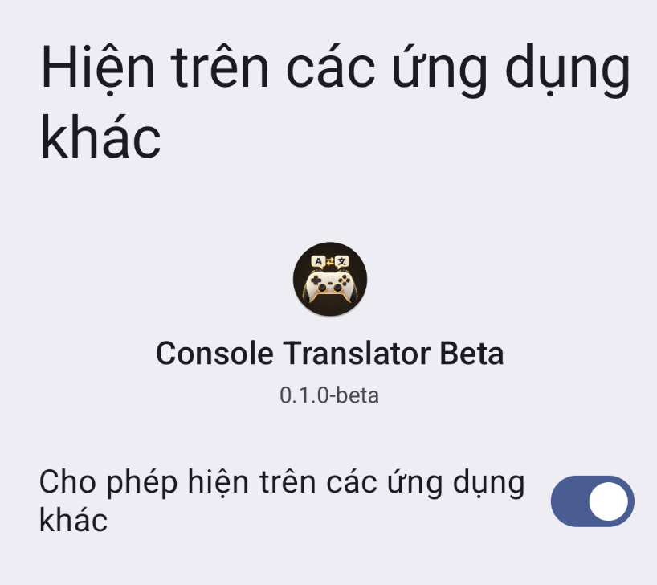
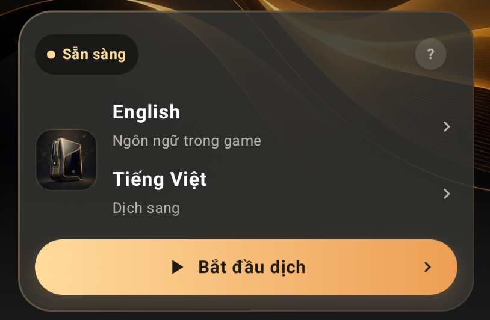
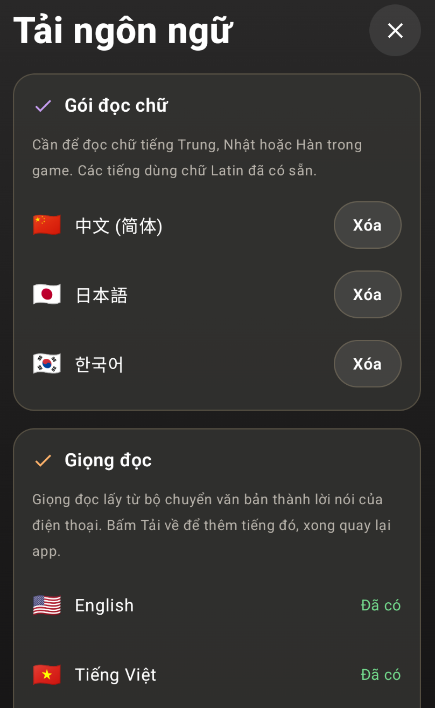
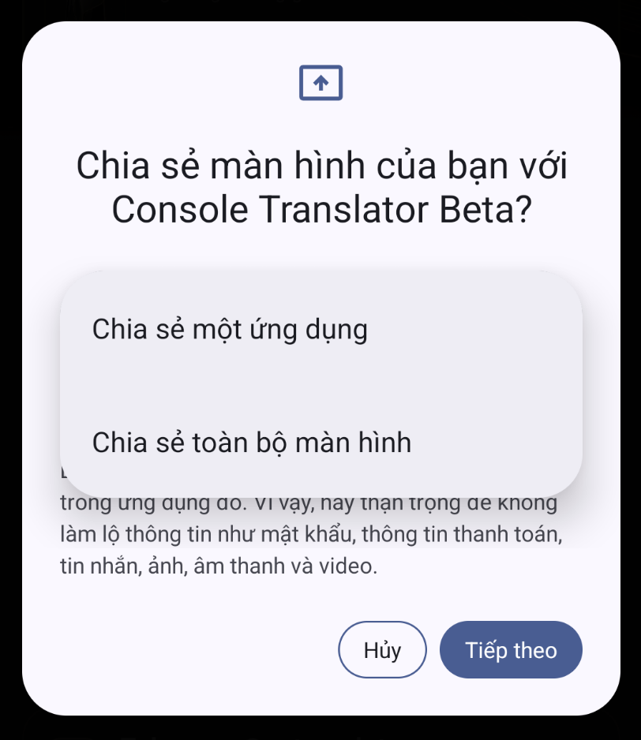
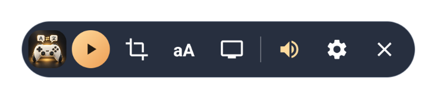
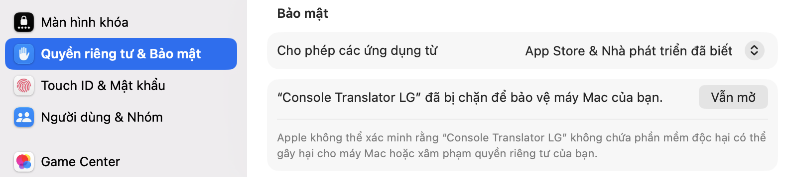

Console Translator
Dịch game sang tiếng Việt. ANDROID
Tải trên Google Play
Android 11 trở lênBản thử nghiệm. Làm 2 bước theo thứ tự:
Không tải được hoặc muốn mua thử?
Hai bước phải dùng cùng một Gmail. Vừa vào nhóm thì đợi vài phút rồi mở lại link tải.
Nhóm này đã được cấp quyền mua thử Premium và PRO. Khi thanh toán, chọn “Test card, always approves”. Nếu chỉ thấy thẻ ngân hàng thật, chưa bấm mua và nhắn hỗ trợ.
Đang dùng Beta cũ? Bản Google Play cài riêng, không cần mã Beta.
Nhờ ae giữ tham gia test 14 ngày, mở app dùng vài lần và báo lỗi giúp mình.
Hướng dẫn sử dụng
Bật phụ đề trong game, rồi mở bước bạn cần.
Dịch lần đầu
Bật phụ đề trong game. Làm theo từng bước dưới đây.
Chơi PX5 / PX4: chuẩn bị trước
Bắt buộc nếu game chạy trên máy chơi game. Chơi game điện thoại hoặc xem YouTube thì bỏ qua phần này.
Console Translator chỉ đọc và dịch chữ đang hiện trên màn hình điện thoại, không tự kết nối được với máy chơi game. Bạn cần một app Remote Play riêng để đưa hình game về điện thoại.
- Mở app Remote Play vừa cài và ghép với máy chơi game.
- Vào được hình game trên điện thoại.
- Mở Console Translator, bấm Bắt đầu dịch. Khi Android hỏi, chọn chia sẻ đúng app Remote Play đó.
Trong app, khi bấm Bắt đầu dịch và chọn “Trên máy PX5 / PX4”, màn hình này cũng hiện ra kèm nút tải.
1Cấp quyền hiện nổi
2Bật quyền cho app
Chỉ cần làm lần đầu.
Nếu hiện danh sách ứng dụng, chọn Console Translator. Bật Cho phép hiện trên các ứng dụng khác, rồi quay lại app.

3Tải ngôn ngữ và giọng đọc
Chỉ tải những ngôn ngữ bạn cần.
Chọn ngôn ngữ trong game và ngôn ngữ dịch sang, rồi bấm Bắt đầu dịch. Nếu app mở Tải ngôn ngữ, tải các gói còn thiếu.

Muốn nghe bản dịch, tải thêm giọng của ngôn ngữ dịch sang. Nếu hiện Đã có hoặc Xóa thì gói đó đã được tải. Xong, đóng màn hình này để quay lại.

4Chọn ứng dụng cần dịch
Chia sẻ đúng app đang có hình game.
Bấm Bắt đầu dịch lần nữa. Khi Android hỏi, chọn Chia sẻ một ứng dụng → Tiếp theo, rồi chọn game hoặc app Remote Play đang dùng.

5Chọn vùng chữ, rồi chạy dịch
Thanh nổi xuất hiện trên ứng dụng bạn vừa chọn.
Bật phụ đề trong game. Bấm nút khung quét, kéo khung bao quanh chữ gốc và bấm Xong. Sau đó bấm tam giác chạy để bắt đầu dịch.

Các nút dưới đây được xếp từ trái sang phải như trong ảnh.
Logo app
Bấm để thu gọn hoặc mở thanh nút. Giữ và kéo logo để di chuyển thanh.
Chạy / Tạm dừng
Bấm nút tam giác để dịch; bấm lại để tạm dừng mà vẫn giữ thanh nổi.
Khung quét
Bấm để chọn Vùng quét (phụ đề, dịch liên tục) hoặc Chọn vùng dịch. Vùng quét: kéo khung lên chỗ chữ gốc, kéo góc để đổi kích thước, rồi bấm Xong. Chọn vùng dịch dịch một lần chỗ bạn đặt khung: nhiệm vụ, mô tả vật phẩm, bảng lựa chọn. Kéo khung lên chữ rồi bấm Dịch. Bản dịch hiện đúng chỗ chữ gốc khoảng 12 giây, chạm để tắt sớm, và hiện trên TV nếu đang nối.
aA · Kiểu phụ đề
Đổi cỡ chữ, màu chữ, nền và bật/tắt hiển thị chữ gốc cùng bản dịch.
Màn hình TV
Xem trạng thái và kết nối lại TV đã ghép. Ghép lần đầu trong Cài đặt → Phụ đề trên TV.
Loa · Đọc bản dịch
Bật hoặc tắt đọc to. Dùng giọng của ngôn ngữ dịch sang đã tải trên điện thoại.
Bánh răng · Chỉnh nhanh
Đổi cách dịch, phong cách, giọng đọc, tốc độ quét hoặc hồ sơ game. Có lối mở cài đặt đầy đủ.
Dấu X · Kết thúc
Dừng phiên dịch và đóng thanh nổi. Muốn dịch lại, mở app và bấm Bắt đầu dịch.
Bạn dùng TV hãng nào?
Đưa phụ đề lên TV
Chọn đúng loại TV để xem cách cài. Điện thoại vẫn cần có hình game để dịch.
Android TV / Google TV
Cài app nhận phụ đề trên TV, chọn đúng bản bên dưới.
- Android TV / Google TV: được. TV nào khóa quyền Hiển thị trên ứng dụng khác thì không hiện được phụ đề.
- TV LG webOS: thử nghiệm, cần Developer Mode. Đã chạy trên webOS 7 (TV 2022), đời khác chưa kiểm tra hết.
- TV Samsung từ 2017 (Tizen 3.0 trở lên): thử nghiệm, cần Developer Mode, máy tính và tài khoản Samsung. Một số TV đời 2018 đang gặp lỗi khi cài.
- TV Samsung 2016 trở về trước: không dùng được.
- TV hệ điều hành khác, Android Box: không hỗ trợ.
Mã Downloader dùng để tải app trên TV. Khác với mã mời beta và mã ghép phụ đề 8 số. Từ bản 0.2.3, app TV tự hiện nút Cập nhật khi có bản mới.
Cách cài trên TV bằng remote
- Trên TV, cài Downloader by AFTVnews từ Google Play nếu có.
- Vào Cài đặt → Ứng dụng → Quyền truy cập đặc biệt → Cài đặt ứng dụng không rõ nguồn, cho phép Downloader.
- Mở Downloader, nhập mã đúng loại TV ở trên, tải rồi cài APK. Kiểm tra tên app Console Translator TV và phiên bản 0.2.4; bản Xiaomi có đuôi -mi.
- Mở app nhận trên TV, bấm Cấp quyền hiển thị trên ứng dụng khác, bật quyền cho app rồi bấm Back. Nếu được hỏi, cho phép bỏ qua tối ưu hóa pin.
- Điện thoại và TV cùng Wi-Fi. Trên điện thoại vào Cài đặt → Phụ đề trên TV, chọn TV hoặc nhập địa chỉ hiện trên TV, nhập mã ghép 8 số rồi bấm Kết nối.
- Chuyển TV sang HDMI của máy chơi game. Giữ hình game trên điện thoại và chạy dịch theo 5 bước phía trên.
Nếu không tìm thấy quyền hiện nổi, tìm các mục Hiển thị trên ứng dụng khác hoặc Xuất hiện trên cùng trong Cài đặt TV. Một số phần mềm TV khóa quyền này.
TV Xiaomi nội địa: cần làm gì khác?
TV Xiaomi mua từ Trung Quốc dùng bản 0.2.4-mi, mã 5807802. Xiaomi bản quốc tế chạy Android TV / Google TV dùng bản thông thường.
Bản nội địa chỉ hiện phụ đề khi đã rời màn hình app nhận và chuyển sang cổng HDMI. Màn hình app chưa hiện phụ đề là bình thường; đừng bấm Tắt app trước khi chơi.
Nếu TV không có Google Play hoặc Downloader, tải đúng APK bằng nút phía trên, chép vào USB rồi mở bằng trình quản lý tệp của TV để cài. Cho phép cài APK cho trình quản lý tệp khi được hỏi; tên menu tùy TV.
Nếu bản thường bị đóng hoặc không hiện phụ đề trên Xiaomi nội địa, chuyển sang bản -mi, cấp quyền và ghép lại bằng mã 8 số của bản đó.
LG webOS
TV LG cần Developer Mode. Điện thoại vẫn chạy dịch và nhận hình game; PC chỉ dùng cài hoặc mở app TV.
1. Chuẩn bị TV: cài Developer Mode trong LG Apps, đăng nhập LG Developer, bật Dev Mode Status. Sau khi TV khởi động lại, bật Key Server. PC, điện thoại và TV cùng mạng.
2. Cài bằng Windows 10/11:
Tải bộ cài LG cho PC 1.2.17 Tải bộ cài LG cho Mac 1.0.5- Giải nén ZIP, mở Chay-Console-Translator.bat. Nếu thiếu Node.js, bấm Cài Node.js, cài bản LTS rồi mở lại.
- Nhập IP và Passphrase 6 ký tự hiện trên TV, bấm Kết nối TV. Kiểm tra đúng IP trước khi xác nhận khóa kết nối.
- Nhập mã LGTV đầy đủ nhận từ Telegram, bấm Cài đặt lên TV, chờ hoàn tất. Công cụ tự chuẩn bị gói cài.
Cài bằng Mac: giải nén ZIP, kéo Console Translator LG vào Applications rồi mở app. Cần macOS 12 trở lên (Intel/Apple Silicon). Nếu thiếu Node.js, bấm Cài Node.js ngay trong app và chờ hoàn tất. Nút Hỗ trợ Telegram dùng để nhận mã hoặc gửi log. Nhập IP/Passphrase, kết nối TV rồi nhập mã LGTV và cài. Nếu macOS chặn mở, vào Cài đặt hệ thống → Quyền riêng tư & Bảo mật → Vẫn mở với ZIP từ GitHub chính thức.
Mac báo “Console Translator LG chưa được mở”

- Bấm Xong trong cảnh báo. Không chọn Chuyển vào Thùng rác nếu muốn tiếp tục cài.
- Mở Cài đặt hệ thống → Quyền riêng tư & Bảo mật, kéo xuống phần Bảo mật.
- Tại thông báo chặn Console Translator LG, bấm Vẫn mở / Open Anyway. Nhập mật khẩu Mac hoặc dùng Touch ID nếu được hỏi.

Chạm ảnh để xem lớn. Bấm Vẫn mở ở bên phải. - Khi cảnh báo xuất hiện lại, bấm Mở / Open.

Nếu chưa thấy Vẫn mở, thử mở app lần nữa rồi quay lại mục Bảo mật. Chỉ thực hiện với bản tải từ GitHub chính thức. Hướng dẫn của Apple.
Mac nhớ thông tin TV trong Keychain. Mã đã gắn với Windows cần cấp riêng cho Mac. Mỗi lần chơi bấm Mở app trên TV trong công cụ Windows hoặc Mac.
Không có máy tính? Trong bản beta Android, vào Cài đặt → Phụ đề trên TV → Cài cho TV LG webOS, nhập IP/Passphrase và bấm Cài lên TV. Cách này dùng quyền beta Android, không dùng mã cài PC.
3. Mỗi lần chơi: bật PX5 trước, chuyển TV sang HDMI. Bật Key Server nếu chưa bật rồi quay về HDMI. Trong công cụ Windows hoặc Mac bấm Mở app trên TV. Trên Mac, xác nhận Đã hiện hình, mở app khi TV đã hiện hình PS5 qua HDMI. Hoặc dùng Mở app đã cài trong màn hình LG của Android.
4. Ghép phụ đề: trên Android vào Cài đặt → Phụ đề trên TV, chọn TV hoặc nhập địa chỉ hiện trên TV. Nhập mã 8 số hiện trong app TV rồi kết nối. Mở hình game bằng Chiaki-Up, chia sẻ ứng dụng đó và chạy dịch như các bước phía trên.
Mã LGTV dùng trong Windows 1.2.17 hoặc Mac 1.0.5; mã ANDROID kích hoạt app điện thoại. Passphrase dùng kết nối LG, mã 8 số dùng ghép phụ đề. Ngày giờ trong mã là lúc tạo theo giờ Việt Nam, không phải hạn sử dụng. Mã cũ 32 ký tự vẫn dùng được. PC nhớ IP/Passphrase sau khi kết nối, nếu trên TV đổi thì nhập lại.
Tránh bấm Home/Cài đặt trên remote khi chơi, chỉ nên tăng/giảm âm lượng. Bấm EXTEND trong Developer Mode trước khi hết hạn. Thu hồi hoặc xóa mã cài PC chỉ chặn cài tiếp, app đã cài vẫn mở được. Khả năng hiện trên HDMI tùy mẫu TV.
PC 1.2.5 trở xuống chỉ nhận mã cũ. Để nhập mã LGTV mới, đóng bản cũ, giải nén bộ cài 1.2.17 vào thư mục mới rồi mở file .bat.
Samsung
Chỉ TV Samsung từ 2017 trở lên (Tizen 3.0+). TV 2016 trở về trước không dùng được, bộ cài sẽ báo SS-OLD_TV. Một số TV đời 2018 đang gặp lỗi khi cài. Điện thoại vẫn chạy dịch; PC chỉ cần lúc cài.
Tải bộ cài Samsung cho PC 1.0.14Tải bộ cài Samsung cho Mac 1.0.8Giải nén ZIP, mở Chay-Console-Translator.bat (hoặc app trên Mac). Công cụ có ba bước đánh số:
- Bước 1, trên TV: mở Ứng dụng, bấm 1 2 3 4 5 trên remote, bật Developer mode, nhập vào ô Host PC IP dãy số lớn hiện trong ô Bước 1 của công cụ (IP của máy tính). Bấm OK rồi rút dây nguồn TV 30 giây.
- Bước 2, kết nối: xem IP của TV (Cài đặt → Chung → Mạng → Trạng thái mạng), nhập vào công cụ, bấm Kiểm tra kết nối TV.
- Bước 3, cài: nhập mã SSTV đầy đủ, bấm Cài đặt lên TV, đăng nhập tài khoản Samsung của bạn khi trình duyệt mở, chờ hoàn tất.
- Mỗi lần chơi: trên TV mở Console Translator TV, chọn cổng HDMI của máy chơi game, rồi ghép điện thoại bằng mã 8 số (lần đầu).
App tự hiện hình HDMI bên trong nó, nên bấm Home sẽ thoát cả hình lẫn phụ đề; mở lại app để chơi tiếp. Mã SSTV khác mã LGTV và mã ANDROID.
Không kết nối được máy chơi game
- Bật máy chơi game. Khi ghép lần đầu, để điện thoại và máy chơi game cùng mạng Wi-Fi hoặc cùng bộ phát mạng.
- Kiểm tra đã bật Chơi từ xa trên máy chơi game.
- Mở Chiaki-Up hoặc PXPlay, ghép máy và chờ hiện hình game trên điện thoại. Sau đó mới mở Console Translator và bấm Bắt đầu dịch.
- Nếu app không tìm được máy, kiểm tra IP của máy chơi game và thử nhập IP thủ công trong app Remote Play.
Console Translator trên Android dịch hình từ app Remote Play, không tự ghép nối với máy chơi game.
Chưa bật Chơi từ xa trên máy
Tên tiếng Việt của Remote Play là Chơi từ xa.
PX5: Cài đặt → Hệ thống → Chơi từ xa → bật Bật ứng dụng Chơi từ xa.
PX4: Cài đặt → Cài đặt kết nối Chơi từ xa → bật Bật ứng dụng Chơi từ xa.
Ghép lần đầu: trong mục này, chọn Ghép đôi thiết bị trên PX5 hoặc Thêm thiết bị trên PX4, rồi nhập mã hiện trên TV vào app Remote Play.
Tên mục có thể khác nhẹ theo phiên bản phần mềm máy. Hướng dẫn PX5 · Hướng dẫn PX4
Chưa cho phép Mạng cục bộ
Trên iPhone: Cài đặt → Quyền riêng tư & Bảo mật → Mạng cục bộ → bật quyền cho Console Translator hoặc app Remote Play đang dùng. Sau đó mở lại app và kết nối lại.
Trên Android: không phải máy nào cũng có mục “Mạng cục bộ”. Vào Cài đặt → Ứng dụng → chọn app đang dùng → Quyền. Nếu có quyền truy cập mạng cục bộ hoặc thiết bị ở gần và app yêu cầu, hãy cho phép.
Điện thoại và TV/máy chơi game cần ở cùng mạng khi kết nối trong nhà. Tránh Wi-Fi khách vì có thể chặn các thiết bị tìm thấy nhau.
Bị đá tay cầm khi kết nối Remote Play
App Remote Play và tay cầm có thể đang dùng cùng một người chơi.
- Bấm nút giữa tay cầm để bật lại. Nếu cần, giữ nút giữa để mở menu người dùng.
- Chọn Chuyển người dùng, rồi chọn người chơi khác với tài khoản app Remote Play đang dùng.
Cách dùng lâu dài: ghép app Remote Play bằng tài khoản phụ, còn tay cầm dùng tài khoản chính để chơi. Hai bên không tranh cùng một người dùng.
Cách này dành cho người giữ tay cầm kết nối trực tiếp với máy chơi game để chơi trên TV.
Không tìm thấy hoặc không kết nối được TV
- Mở Console Translator TV trên TV, kiểm tra có hiện mã ghép 8 số.
- Điện thoại và TV cùng mạng Wi-Fi hoặc cùng bộ phát mạng. Kiểm tra quyền Mạng cục bộ nếu điện thoại có yêu cầu.
- Trên điện thoại mở Phụ đề trên TV. Nếu không tìm thấy TV, nhập địa chỉ đang hiện trên màn hình app TV.
- Nhập mã 8 số hiện tại. Nếu mã đã đổi, dùng mã mới.
Nếu TV chưa cài app nhận phụ đề, mở hướng dẫn cài cho TV.
Bấm Bắt đầu dịch mà không hiện hộp hỏi quyền
Kiểm tra đã cấp quyền hiện nổi cho app, rồi bấm lại Bắt đầu dịch. Nếu đang dùng Beta cũ, kiểm tra thêm mạng và hạn mã Beta.
Chọn nhầm app khi chia sẻ
Ở bước Chia sẻ một ứng dụng phải chọn đúng game, YouTube hoặc app Remote Play đang có hình. App đứng đầu danh sách thường là app vừa mở gần nhất (ví dụ app nhắn tin), chọn nhầm thì không dịch được gì.
Không có chữ
Nội dung phải có phụ đề hiện trên màn hình (bật phụ đề trong game, hoặc nút CC trên YouTube). Kiểm tra đã bấm nút chạy và khung quét đúng chỗ phụ đề.
Máy lag
Trong bánh răng trên thanh nổi, giảm tốc độ quét xuống 3.
Hình chia sẻ bị đen
App game/Remote Play có thể chặn chụp màn hình. Kiểm tra ảnh chụp/chia sẻ từ Chiaki-Up có hiện chữ game hay không. Nếu vẫn đen, báo người phát hành để kiểm tra.
Không nghe giọng
Bật nút loa, tăng âm lượng và kiểm tra giọng đã tải.
Dịch cả menu
Thu nhỏ vùng quét; dời phụ đề dịch để không che chữ gốc.
Cần hỗ trợ?
Gửi ảnh chỗ bạn bị kẹt, mình xem giúp.